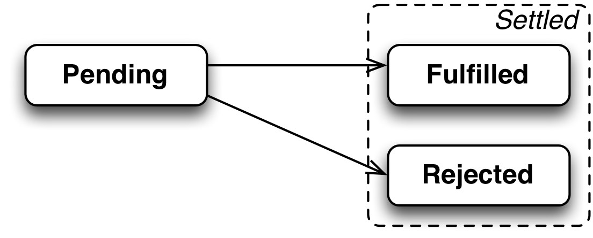

Développement Web
La programmation asynchrone moderne en JavaScript
Rappels
Programmation asynchrone \(\approx\)
- exécution de la fonction dans le futur
- ajout à la queue sur déclenchement d’un event
- puis traitement par l’event loop
returnne permet pas de renvoyer de valeur- seulement d’interrompre le flux d’exécution
- comme un
throwdans un cas de succès
- on doit passer “la suite” en paramètre
- paramètre appellé callback
- principe du Continuation Passing Style (CPS)
Exemple de décorateur avec setTimeout
function throttle(funct, delay) {
let waiting = false;
return function (...args) {
if (!waiting) {
waiting = true;
setTimeout(() => {
waiting = false;
}, delay);
return funct(...args);
}
};
}Le décorateur throttle, une variante de memo avec remise à zéro par une alarme.
La programmation asynchrone avec les promesses
Ou comment éviter la pyramid of doom
Pyramid of doom
Les promesses
L’interface Promise représente un intermédiaire (proxy) vers une valeur qui n’est pas nécessairement connue au moment de sa création. Ainsi, des méthodes asynchrones renvoient des valeurs comme les méthodes synchrones, la seule différence est que la valeur retournée par la méthode asynchrone est une promesse (d’avoir une valeur plus tard).
Ce qui change : au lieu de passer le callback en paramètre de la fonction asynchrone, on va passer le callback à l’objet Promise renvoyé par la fonction.
États des promesses

- pending (en attente) : ni remplie, ni rompue ;
- fulfilled (tenue) : l’opération a réussi ;
- rejected (rompue) : l’opération a échoué.
Construction de Promise
Pour créer un Promise, on doit passer une fonction d’ordre supérieure qui elle-même prend deux fonctions en paramètre, nommées par convention :
resolvequi va résoudre en succès (fulfilled)rejectqui va résoudre en échec (rejected)
Attention l’environnement fixe resolve et reject (code natif) et appelle l’exécuteur immédiatement (exemple)
Enchainer les promesses

Les méthodes then(callback) et catch(callback) renvoient des promesses qui peuvent être chaînées à leurs tours.
Le chainage donne un style linéaire qui évite une imbrication des traitements (la pyramid of doom)
Enchaînement de promesses
Promise.prototype.then(fn) renvoie une promesse :
- soit
fnretourne une promesseRdont le résultat sera utilisé quand elle sera résolu , - soit
fnretourne une valeurRqui sera transformée automatiquement en une promesse immédiatement résolue.
Consommation de Promise
Consommation de Promise : un exemple
console.info("Start");
Promise.resolve(1)
.then(inc)
.then((_) => Promise.reject(new Error("Broken")))
.then(inc) // /!\ sauté /!\
.catch((err) => {
console.error(err);
return 42;
}) // /!\ attention au retour /!\
.then(inc)
.finally(() => console.log("Done"));
console.info("End");Qu’est-ce qui s’affiche ? (source)
Remarques sur then
- Attention au cas où
fnn’est pas une fonction :- alors c’est la promesse d’origine qui est renvoyée.
Promise.resolve(42).then(1).then(console.log)- affiche
42et pas1
- affiche
- à éviter !
- si la promesse est déjà résolue, on peut encore ajouter un traitement
thenqui sera déclenché au prochain tourconst p = Promise.resolve(42);p.then(() => p.then(() => console.log(0)));- affiche bien
0
- affiche bien
Exemple promisification de setTimeout manuelle
function timedValue(value, delay) {
function executor(resolve, reject) {
setTimeout(() => resolve(value), delay);
}
return new Promise(executor);
}
const p = timedValue(1000, "Success!");
// on enchaine ici 3 callbacks sans imbrication
p.then((str) => "OK! " + str)
.then((str) => str + " Done!")
.then((str) => console.log(str));La promisification générale
La promisification consiste à transformer une API par callback en une API qui renvoie une Promise.
function promisify(funct) {
// wrapper (*)
return function (...args) {
return new Promise((resolve, reject) => {
// custom callback/executor (**)
function callback(err, result) {
if (err) reject(err);
else resolve(result);
}
args.push(callback); // append custom callback
funct.call(this, ...args); // call the original function
});
};
}// avec API callback
const wait = (delay, value, cb) => setTimeout(() => cb(null, value), delay);
wait(1000, 42, (err, res) => (err ? console.error(err) : console.log(res)));
// avec Promisification
const waitPromise = promisify(wait);
waitPromise(1000, 42).then(console.log).catch(console.error);La bilbiothèque standard Node.js propose les outils util.promisify et util.callbackify.
Les méthodes de la classe Promise
Des méthodes de classe, pas d’instances
The
Promise.all()method returns a singlePromisethat resolves when all of the promises in the iterable argument have resolved.The
Promise.allSettled()method returns a promise that fulfills after all of the given promises have either fulfilled or rejected.
Exemple, lancement de trois promesses en parallèle:
Promise.any()takes an iterable of Promise objects. It returns a single promise that fulfills as soon as any of the promises in the iterable fulfills, with the value of the fulfilled promise.The
Promise.race()method returns a promise that resolves or rejects as soon as one of the promises in the iterable resolves or rejects
Méthodes de classe pour des promesses immédiatement résolues ou rejetées
Synthèse sur les promesses
- standardisées
- facilitent l’enregistrement de handlers
- en les passant aux résultats des fonctions et pas en paramètre des appels
- donnent un style linéaire
- disponsent d’API riche
Attention aux promesses
- cela reste toujours asynchrone
- il faut toujours passer des fonctions en paramètre
- juste différement
- et donc créer ces fonctions (avec des fermetures)
- il faut toujours passer des fonctions en paramètre
- les promesses ne permettent qu’un seul appel à
reject/resolvedans l’exécuteur- plusieurs appels possible en revanche pour les callbacks style Node.js
- le comportement avec des constantes n’est pas toujours naturel, attention
La Web API
L’API fetch
https://developer.mozilla.org/en-US/docs/Web/API/Fetch_API
The Fetch API provides an interface for fetching resources (including across the network). It will seem familiar to anyone who has used XMLHttpRequest, but the new API provides a more powerful and flexible
Les principaux objets de la Fetch API
Exemple avec fetch
- resource peut être une
string, uneURLou uneRequest - pour une requête
POST,PUTouPATCH, le body est passé dans les options, avec le type de méthode
Exercice
- Télécharger les fichiers de départ et les données d’exemples
- Lancer un serveur web avec
python -m http.serverou LiveServer dans le dossier de travail - Modifier le JavaScript
async-download.jspour que le contenu du fichier dont le nom est passé dans l’input soit affiché dans la balisecode - Traiter le cas des erreurs réseaux pour afficher un message (sans exception uncaught)
La programmation avec async et await
async / await
Sont là pour faciliter l’utilisation des promesses :
Réécriture async / await en Promise
Les await sont à peu près équivalents à une ré-écriture de code dans le then des Promise
Pour maîtriser async / await, il faut maîtriser les Promise !
Exemple avec setTimeout
function timeout(ms) {
return new Promise((resolve) => setTimeout(() => resolve("Get Up!"), ms));
}
async function sleep() {
const r = await timeout(3000);
console.info(r);
return r;
}
console.log("Before");
await sleep(); // /!\ await SUSPEND l'EXECUTION /!\
console.log("After");Attention à ne pas mettre des await de partout !
Traduction async / Promise
Exemple Google Web Fundamentals
Exercice (suite)
- Reprendre le code de
async-download.jsen utilisantasync/await